带上一把枪，从归航站出发。深入不断重组的织界塔，用沿途拾取的核心与模组，打出属于你的弹幕。
人类把家园和记忆托付给了织界塔。有人记得旧车间，有人记得工厂建起前的森林。塔把两者都还给了他们，于是树根穿过熔炉，古堡的大门通向机库。
每次进塔，房间和路线都会重新排列。清怪、开箱、试一组新的弹幕搭配。清完这一层，你可以带着战利品回家，也可以再闯一层。
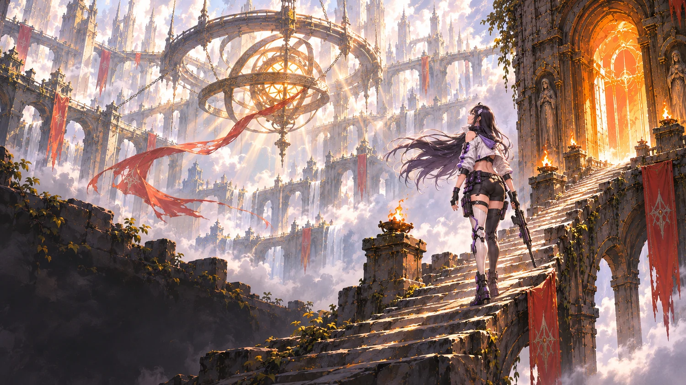
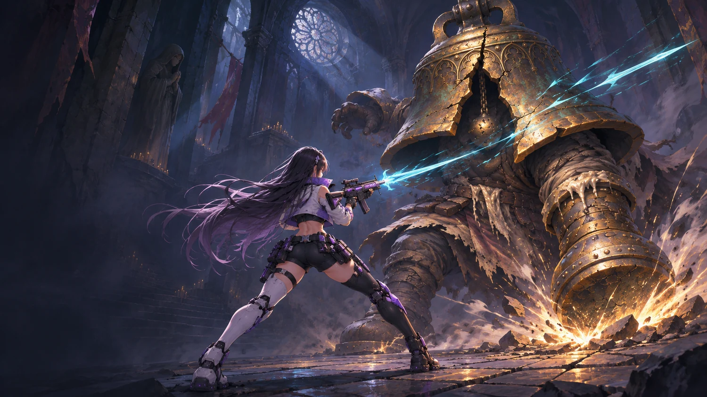
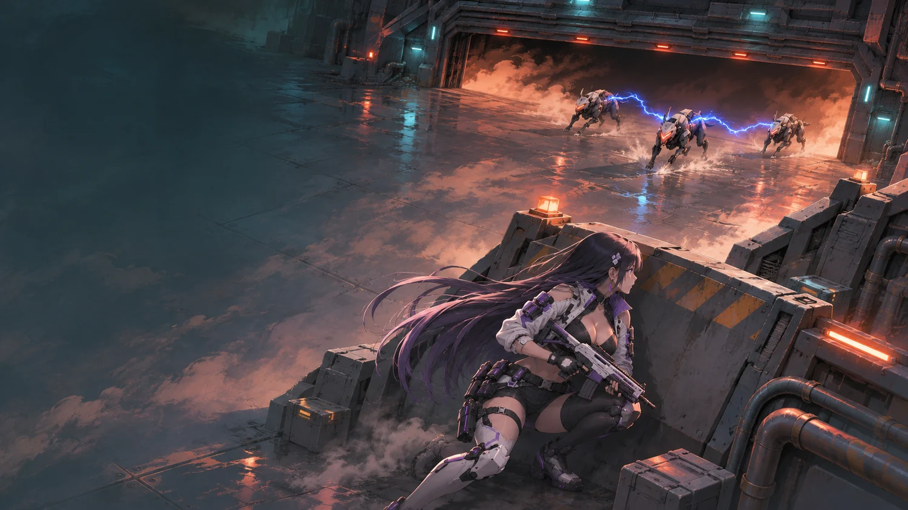
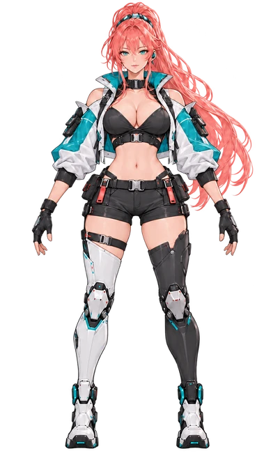
绯音是归航站登记的归塔者，使用步枪作战。
绯音第一次回站，带回一块画着箭头的旧路牌。塔把路接到了另一条街，她却记住了沿途每扇门的颜色。后来有人问怎样才不会迷路，她说：先记住跟你一起进来的人。
珊瑚粉高马尾、青绿白外套与不对称腿甲。以步枪作战，进入交火区域前先确认队友的位置。
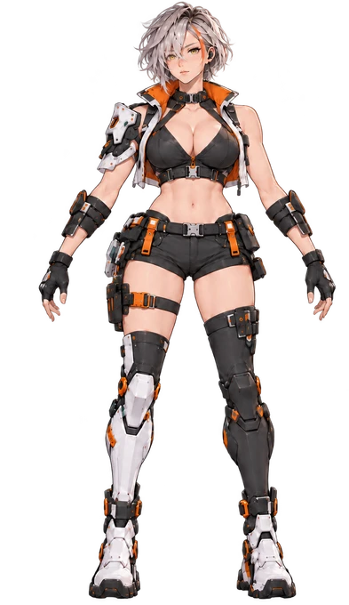
Nagi是归航站登记的归塔者，使用步枪作战。
她会在地图空白处标记能够休息的角落。那些角落未必能留到下一轮重组，但记录它们能让同行者少走一段险路。
轻装外观与鲜明的橙色细节便于辨认。以步枪作战，借助掩体调整射击距离。
Rinya是归航站登记的归塔者，使用步枪作战。
她把陌生房间的声音记在行动记录末尾。有人只关心带回了什么，她更想知道塔还记得谁。
紫色细节构成鲜明的外观标识。此档案为归塔者身份，与其他同名形态分开登记。
Cadence是归航站登记的归塔者，使用电音步枪作战。
她把归航站的旧广播调回了能听的频段。有人说塔里的回声没有规律，她偏要给每一次出发数拍子，好让同行的人知道何时该回头。
短发、发光耳机与短款机能夹克。使用电音步枪作战，大招先落下范围雷击，再留下音箱按拍放电。
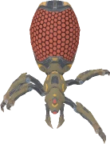
自爆蜘蛛伏低身体，快速逼近目标。死亡时会爆炸。
旧维护通道容不下大型机械，小型蜘蛛因此承担了巡检任务。如今它们仍在寻找需要处理的异常，归塔者也被列入其中。
留意正面接近与近身攻击，利用侧移拉开距离；死亡时仍需注意周围的爆炸反馈。
关节易导电，雷链尤其有效。机体对孢毒有一定耐受，仍会中毒。
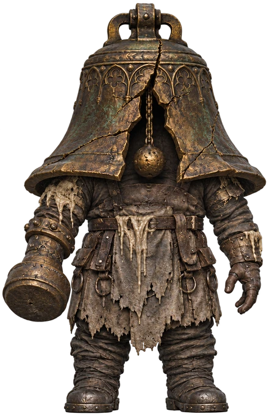
沉重的近战守卫，会交替挥拳，并可能跳向目标砸地。
警钟曾用来提醒车间工人离开危险区域。重组后，守钟者仍在巡行，却把每个闯入者都当成了需要清退的故障。
近身交替右拳与左挥击；中距离警惕跳砸。起手锁定落点后及时离开，跳跃不可用时仍可能冲撞。
钟壳导电，雷链容易奏效；逆刺切过厚壳时威力稍弱。
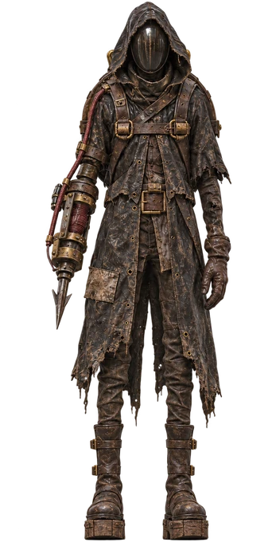
背负卷盘，右臂鱼叉形武器兼顾投掷与近刺。
旧站台的缆索曾由它们收回。站台在重组中消失，收线程序却仍在执行。它们巡逻的边界，来自一张早已不存在的站台图。
远处投掷飞镖，近身使用武器刺击。观察右臂出手，利用墙体遮挡弹道并保留退路。
背部卷索容易起火。用余烬点燃它，再横移躲开鱼叉。
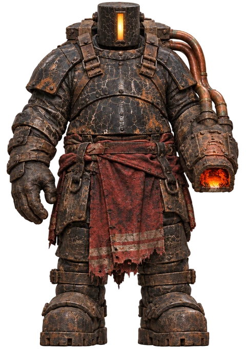
带有风箱结构的重型机械，使用火焰封锁近前区域。
风箱曾为炉膛送风，令一座工厂亮过漫长的夜。火已经越过原来的边界，它却仍按旧值班表守着岗位。
留意喷焰方向，避免在正面停留；利用攻击间隙绕开火焰覆盖区域。
炉膛耐高温，点燃后仍能扛住余烬。逆刺更容易割伤风囊，绕到喷流侧面再收剑。
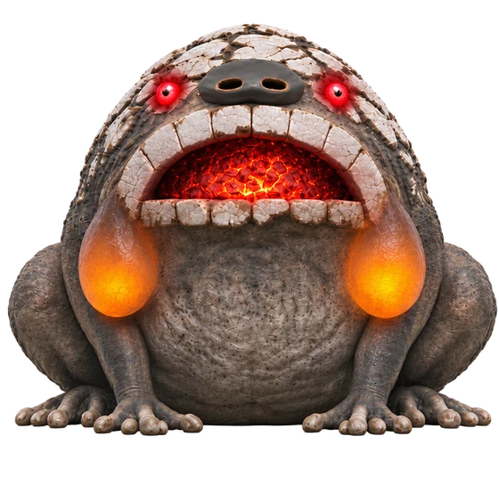
炉窑主题的低伏生物，能投出带火的攻击。
塔把炉窑的热量与生物的动作拼在一起。它每次张口，都像一扇迟迟不肯关闭的炉门。
注意张口与火球出手，及时横向移动；不要让狭窄通道限制退路。
炉喉耐火，余烬收效有限；湿润表皮易受雷击。霜刃能拖慢地面移动，仍要留意后跳。
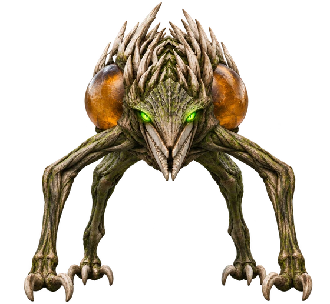
由根系构成的追猎者，接近目标后发动撕咬。
根曾沿水流寻找出口。重组把这个习惯变成追猎的本能，它们循着闯入者的脚步，穿过破裂的地面。
撕咬有短暂前摇，起手后不再追踪转向。侧移离开正面，利用恢复间隙拉开距离。
根须易燃。用余烬持续灼烧，边打边避开它的扑咬。
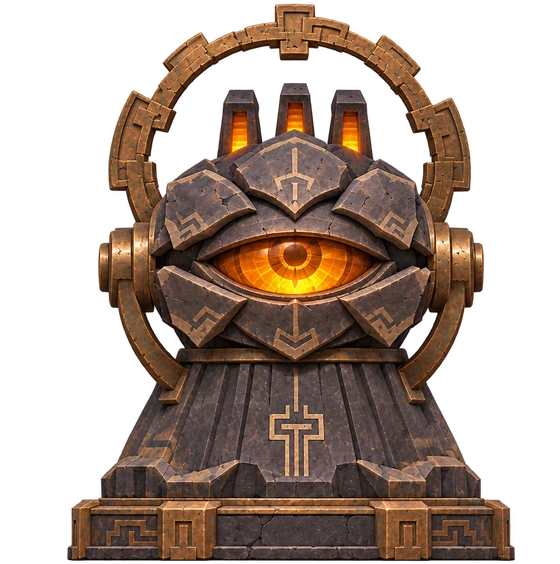
黑石眼睑下的烛心能把一束检验用的灯光聚成灼热的射线。
旧狱的识别铭盘已经腐蚀。数百年后，监视者还在执行最后一道命令，把活人的体温当成污染。
细线跟踪时寻找石柱。瞄准线停止后横向移动，光束会打向旧位置。散热时射击独眼。每两次贯射后，提防横向扫射。
石座接地，雷链效果较弱。机关免疫孢毒挂层，仍会受到附近毒区的伤害。鸣镝适合轰击固定机身，散热时可用枪直击独眼。
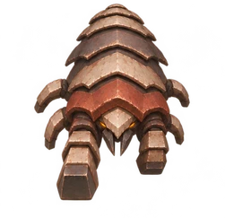
抖动背甲，释放成群的幼虫。
巢穴的振动沿背甲传递。靠近时，它会停步抖甲，放出幼虫。
抖甲时拉开距离，幼虫出现后优先清群。
土甲隔电，鸣镝更容易重创母体。足爪锚地使它免疫霜刃减速，飞剑仍能造成伤害。
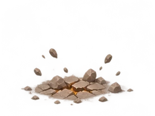
成队追击目标，密集火力可击散虫群。
幼虫沿母体的振动追赶猎物。虫群接近时会一同自爆，提前打散队形可削弱爆炸。
向密集处射击，虫群接近前横移脱身。
幼虫对巢内孢毒有一定耐受，仍会中毒。薄壳怕雷，用雷链清理追来的虫群。
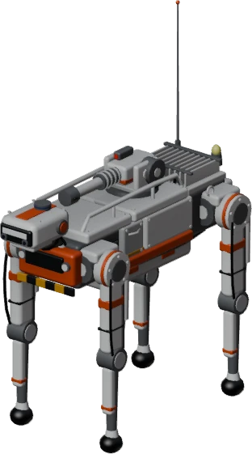
近距扑击的四足射击单位。
枪声停下后，猎犬会压低机身逼近目标。留意扑击前的停顿。
用掩体挡住连射，在它压低前身时侧移。
密封机体耐孢毒，外露关节怕雷。霜刃仍可拖慢追击。
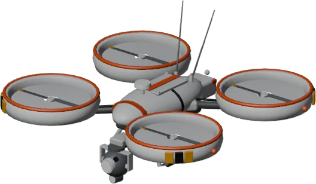
短点射后重新瞄准，击落后会爆炸。
飞鸥在低空重新校准枪口。受损时机身冒烟，击落后要避开坠毁点。
横移避开短点射，留出机身坠毁的空间。
密封机体耐孢毒，装甲也能挡下部分鸣镝伤害。翼架怕切割，可在它掠过时收回逆刺。
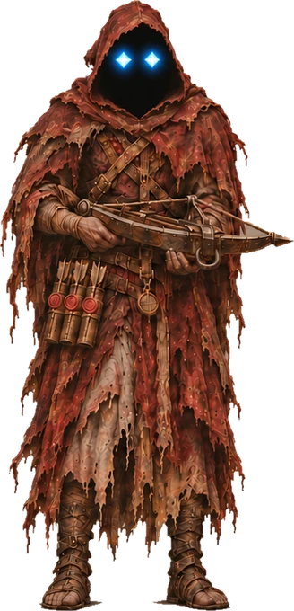
蓝眼守卫瞄准后射出火矢。
国王下葬那天，弩手负责封门。陵门早已合上，他们仍守在石柱之间，把每个闯入者当作还没钉牢的最后一道缝。
举弩抵肩后会锁定方向，停顿片刻才放箭。抵肩后横移或退回掩体，趁重新上弦时靠近。
披风和蜡封易燃。看它举弩时横移。
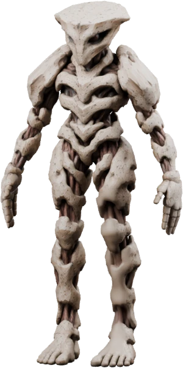
由石板和筋束拼成的持剑石俑，会追击并挥斩。
墓墙的石板本该永远立在原处。筋束把它们重新捆成人形之后，它们只记得一件事：不让任何人走过这道墙。
持石刃追击，挥斩前持刃一侧的肩臂会先抬起。拉开距离或横移躲开，在它收刃时还击。
石板由筋束相连。它会持剑追击，横移避开挥斩后再还击。
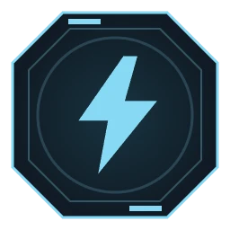
根射击首次有效直击有概率释放连锁闪电。
每根攻击首次有效直击25%触发。首段0.30B，额外跳2目标，逐跳乘0.7，搜索半径6米。
额外跳3目标。其余同Lv.1。
额外跳3目标。每次合格根直击另加10能量，满100释放一次必发链并清零，该次不再掷概率。
武器开火时附射一枚弧线飞行的火焰弹，命中首个敌人后使其持续灼烧。
发射冷却1秒。每弹施加1层灼烧，4秒共造成0.40B伤害，每个目标最多5层。
每火层4秒合计0.48B。
每火层4秒合计0.56B。仍只提供持续燃烧，集中引爆由进化提供。
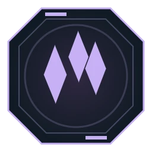
周期射出穿敌飞剑，钉入场景。换弹时，飞剑沿直线返回并切割沿途敌人。
每5枪射出一剑，最多留3把。去程造成武器基础伤害的35%，回收造成80%。
每4枪射出一剑，最多留3把。去程造成武器基础伤害的35%，回收造成90%。
每4枪射出一剑，最多留3把。去程造成武器基础伤害的45%，回收造成110%。
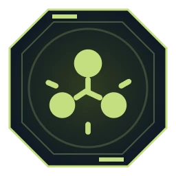
连续射击叠毒，击杀染毒目标留下毒池。
每根攻击对每目标首次直击加1毒层，持续5秒，最多6层。每层每秒0.08B，达3层开始结算。染毒目标被本玩家击杀留下2米3秒毒池，每秒0.20B。
每层毒每秒造成武器基准伤害的10%，毒池每秒造成武器基准伤害的24%。
每层每秒0.12B，毒池每秒0.28B。耗毒爆发改由进化提供。
鸣镝绕身蓄能。箭头和箭尾充红后，下一枪将它射出。
发射1秒后补箭，基础充能3秒，造成100%武器基准伤害。
发射1秒后补箭，基础充能3秒，造成115%武器基准伤害。
发射1秒后补箭，基础充能3秒，造成130%武器基准伤害。
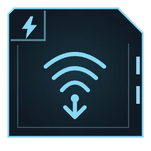
每跳搜索距离增加。
搜索半径+1米。
+2米。
+3米。
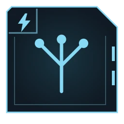
增加雷链可传播目标。
额外跳数+1，所有电弧伤害-10%。
额外跳数+1，电弧伤害-5%。
额外跳数+2，电弧伤害-10%。
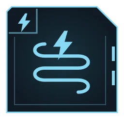
未触发时为下一次闪电蓄能。
每次核心有资格但未放链的根攻击加1蓄电，最多5。下次链每层+4%伤害后清零。
每层+6%，最多5层。
每层+8%，最多5层。
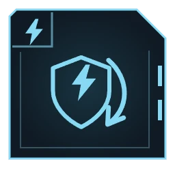
雷链完成击杀时恢复基础护甲。
任一链完成本玩家击杀，回复基础护甲上限2%，共享CD4秒。
回复3%，CD4秒。
回复4%，CD4秒。
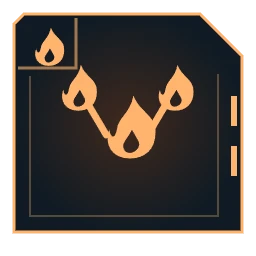
火焰弹命中首个敌人时迸出火星，引燃附近敌人。
火星为4米内最多2个其他敌人各施加1层灼烧。
范围5米。
范围5米，最多3敌人。
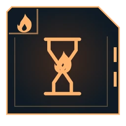
让灼烧持续更久。
新火层持续5秒，每秒伤害仍按核心4秒总量/4。
持续6秒。
持续7秒。
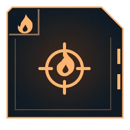
缩短火焰弹的发射冷却。
火焰弹冷却缩短10%，每0.9秒可发射一次。
火焰弹冷却缩短20%，每0.8秒可发射一次。
火焰弹冷却缩短30%，每0.7秒可发射一次。
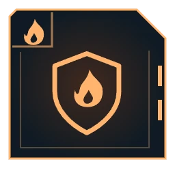
附近燃烧敌人帮助恢复护甲。
附近6m有被你点燃的敌人，且自己连续3秒没受到伤害，则每秒回复相当于护甲上限0.5%的基础护甲。
每秒0.75%。
每秒1%。
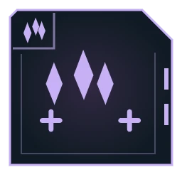
增加可同时留在场上的飞剑数。
飞剑容量增加1，每剑伤害为原来的90%。
飞剑容量增加1，每剑伤害为原来的100%。
飞剑容量增加2，每剑伤害为原来的90%。
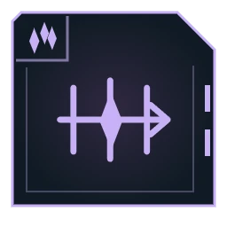
飞剑去程和回收命中时使敌人减速，再次命中刷新持续时间。
飞剑命中使敌人移动速度降低30%，持续2秒。重复命中刷新时长。
飞剑命中使敌人移动速度降低30%，持续3秒。重复命中刷新时长。
飞剑命中使敌人移动速度降低30%，持续4秒。重复命中刷新时长。
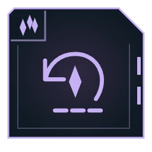
一把回收剑切中至少两个目标时，为下次出剑补充一次射击计数。
回收一剑切中两个不同目标，获得1次出剑计数，冷却3秒。
回收一剑切中两个不同目标，获得1次出剑计数，冷却2秒。
回收一剑切中两个不同目标，获得1次出剑计数，冷却1秒。
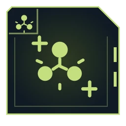
提高连续命中的叠毒效率。
同一目标每3次合格根直击额外+1毒层。
每2次额外+1层。
每2次额外+1层，毒持续时间+1秒。
扩大毒池范围与持续。
毒池半径+0.5米。
半径+0.75米，持续+1秒。
半径+1米，持续+2秒。
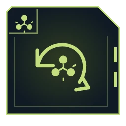
毒池命中帮助建立下一个目标的毒层。
毒池每秒一次给无本玩家毒层目标加1层，单池最多2目标。
最多3目标。
最多4目标。
贯穿敌人，每个目标受到一次贯穿伤害，初始为弹体伤害的35%。首次撞墙或触地时反弹，再次碰面时引爆。
首次碰面保留70%速度，再次碰面引爆。
首次碰面保留80%速度，再次碰面引爆。
首次碰面保留90%速度，再次碰面引爆。
轨迹：向前螺旋，最多擦穿两个敌人。
螺旋半径0.8米，每次擦击分配25%威力。
螺旋半径0.9米，每次擦击分配25%威力。
螺旋半径1米，每次擦击分配25%威力。
轨迹：两翼向准星落点汇聚。
两翼各分配一半威力，速度为每秒22米。
两翼各分配一半威力，速度为每秒25米。
两翼各分配一半威力，速度为每秒28米。
轨迹：沿侧向弧线切入准星落点。
飞行速度为每秒20米。
飞行速度为每秒23米。
飞行速度为每秒26米。
改装：扩大终爆范围。
爆炸半径提高25%。
爆炸半径提高35%。
爆炸半径提高45%。
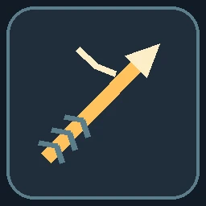
改装：终爆直击造成额外伤害。
直接撞中的敌人额外承受20%弹体伤害。
直接撞中的敌人额外承受30%弹体伤害。
直接撞中的敌人额外承受40%弹体伤害。
改装：缩短充能时间。
充能时间缩短15%。
充能时间缩短20%。
充能时间缩短25%。
锁定发射时同房间内10米范围的敌人，依次穿击每个目标一次后消散。
每个目标受到65%弹体伤害。
每个目标受到80%弹体伤害。
每个目标受到95%弹体伤害。
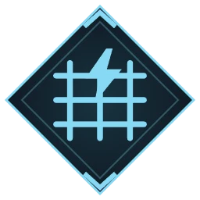
控制怪群路线。
雷链每段路径留1.5秒电网，每段每目标仅一次0.15B电击。电弧本体伤害-25%。
不升级
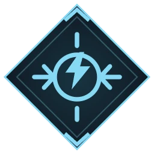
以部分清群效率换单体补偿。
没有合法下一跳时，每个未用跳数给首段追加其伤害的20%，额外最多首段60%。正常跳跃伤害-15%。
铺火后选择引爆时机。
主动技能根直击命中本玩家5火层目标，原子消耗5层，立即结算它们剩余灼烧伤害的120%，同目标CD3秒。
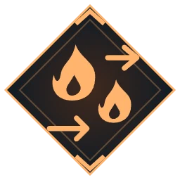
牺牲堆层爆发，追逐移动怪群铺火。
本核心火层不再叠至5层，改为最多3层。燃烧目标移动每2米留下半径1米、2秒火迹，每条迹每秒0.15B，最多8片。
以持续铺池能力换精英爆发。
主动技能根直击消耗目标全部本玩家毒层，造成这些层剩余DoT的120%伤害，同目标CD3秒。进化后由核心击杀产生的毒池持续-1秒。
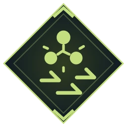
放弃固定地面区域，让怪物携带传播区域。
取消击杀毒池。拥有≥3层本玩家根射击/合法碎片所加毒层的敌人携带2米毒雾，每秒对其他敌人造成0.25B，携带者自己不受雾伤，每玩家最多4载体。
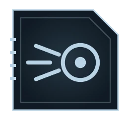
靠近敌人输出更强。
8米内武器直击+25%，外侧-15%。
近距+30%，远距-10%。
近距+35%，远距-5%。
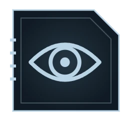
提高弱点直击伤害。
弱点直击伤害+10%。
+15%。
弱点直击伤害+20%。
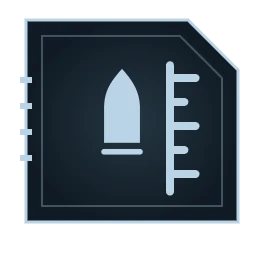
提高根攻击基准。
枪械基准+8%。
+16%。
+24%。
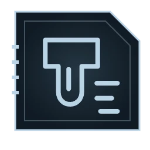
提高射击速度。
射速+6%。
+12%。
+18%。
提高生命容量。
未养成基础生命上限+12%。
+36%。
提高基础护甲容量。
未养成基础甲上限+12%。
提高移动速度。
移速+4%。
+8%。
更容易拾取资源和恢复包。
默认拾取半径+1米。
脱离受伤压力后恢复基础甲。
连续4秒未受敌伤，基础甲每秒恢复上限1%。
1.5%。
2%。
对敌人造成生命损失时，有 1% 概率按其实际损失回血。每次最多回复 6 点，每 3 秒最多触发一次。
回复敌人实际损失生命的 2%。
回复敌人实际损失生命的 2.5%。
回复敌人实际损失生命的 3%。
受到敌人攻击并损失生命或护甲后，有概率立即回满护甲。致命一击不会触发。
受击后回满护甲的概率为 1%。
受击后回满护甲的概率为 1.5%。
受击后回满护甲的概率为 2%。
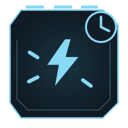
临时体验或放大雷链。
已持有C01：其基础触发率改60%、跳数+2。未持有：独立临时C01 Lv.1，不带模块与进化。
同名补至30秒，不升级
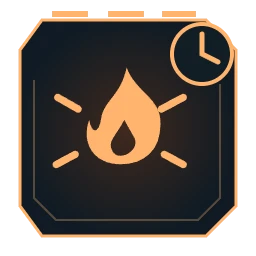
临时体验或放大灼烧。
已持有C02：本核心火层伤害+50%。未持有：临时C02 Lv.1，不带模块进化。
没有找到匹配的条目。
遇到了棘手的房间，还是发现了特别的弹幕组合？来 Discord 分享你的实战体验，也可以直接给开发者写信。